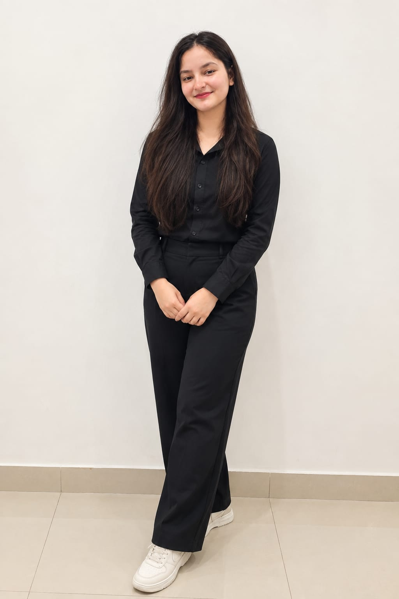
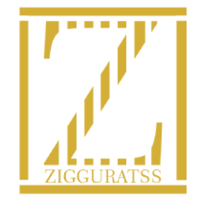
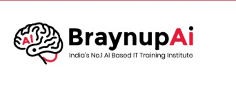
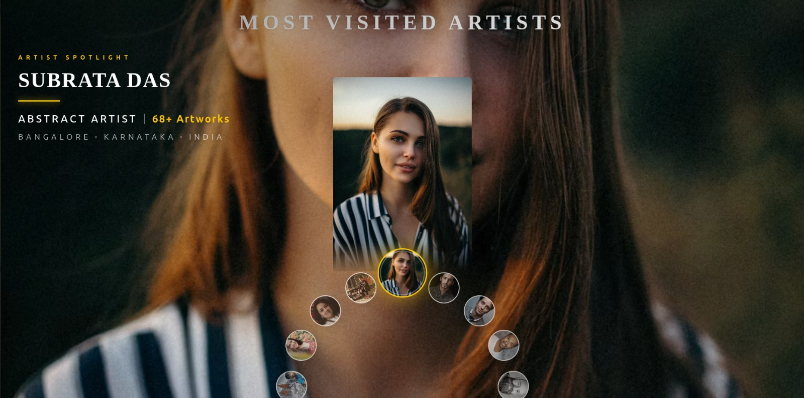
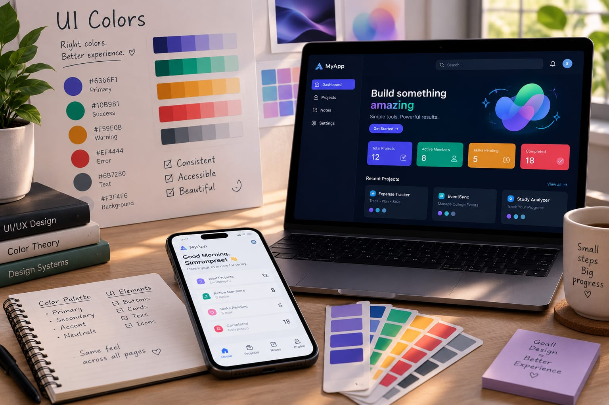
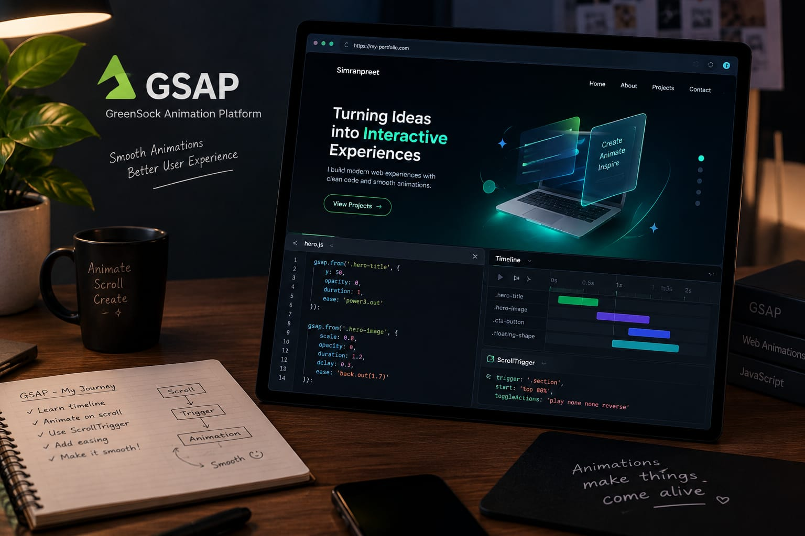
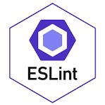
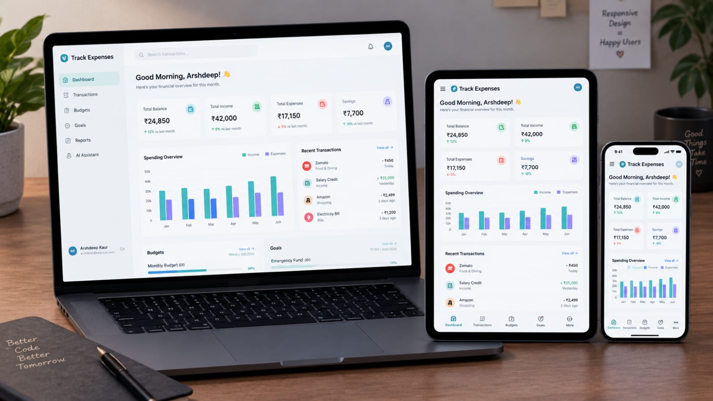
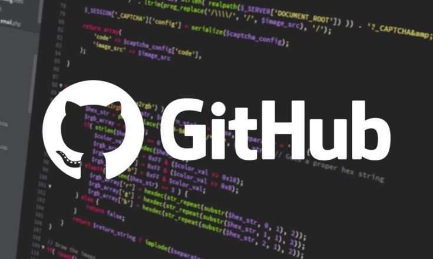
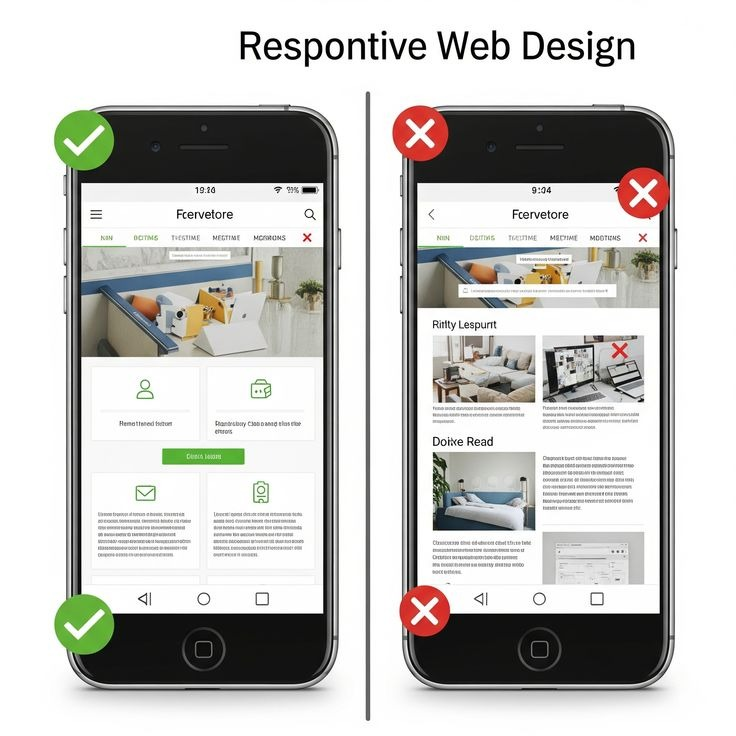

A practical journey of building responsive interfaces, reusable React components, API-connected features, and meaningful digital experiences. This presentation reflects my internship learning, real-world project work, frontend contribution, and growing interest in full-stack development and AI/ML.
Simranpreet Kaur
Full-Stack Developer | AI/ML Enthusiast
10 FEB 2026 — 20 AUG 2026
01
About Me

BCA STUDENT · FULL-STACK DEVELOPER
HELLO, I AM
Simranpreet Kaur.
I am pursuing a Bachelor of Computer Applications (BCA) and building my path as a Full-Stack Developer with a strong interest in Frontend Development and AI/ML.
I gained practical experience at Zigguratss Artwork LLP as a Full-Stack Developer Intern and at BraynupAI as a Front-End Developer Intern.
For a real-world project with APJ Institute, I worked mainly on frontend development with my partner, creating responsive, user-friendly interfaces using React.js, JavaScript, HTML, CSS, and Tailwind CSS.
These experiences have strengthened my skills in frontend development, backend integration, APIs, databases, Git/GitHub, and real-world applications. I am also learning AI/ML and exploring AI-powered web experiences.
My goal is to grow as a Full-Stack Developer while creating thoughtful, AI-powered applications.
A BEGINNING WITH CURIOSITY
ZIGGURATSS
02
Where I Worked

INTERNSHIP
Zigguratss Artwork LLP
Full-Stack Developer Intern
Duration6 MONTHS
Worked on frontend interfaces, backend integration, APIs, databases, and real-world application features.

INTERNSHIP
BraynupAI Technology
Front-End Developer Intern
Duration3 MONTHS
Built responsive interfaces and contributed to clear, engaging frontend experiences.
PAID REAL-WORLD PROJECT
APJ Institute with Smayarth
Frontend Development Partner Project
Worked with my partner on a paid project to create responsive, user-friendly website interfaces using React.js, JavaScript, HTML, CSS, and Tailwind CSS.
LEARNING BY BUILDING
ZIGGURATSS
03
ZIGGURATSS ARTWORK LLP
My Responsibilities

PROJECT 01
Zigga Web Experience
Responsive interface with reusable components and polished user flows.
The frontend is built using React.js and Vite, with Tailwind CSS for styling and React Router for navigation. It includes interactive sections, animations, carousels, charts, and responsive layouts to create a modern educational website for APJ Institute.
I worked on the frontend development with my partner, creating responsive and user-friendly website interfaces for this real-world paid project.
REACT.JSJAVASCRIPT (ES6)HTML5CSS3TAILWIND CSSREACT ROUTERVITEGITGITHUBVISUAL STUDIO CODEVERCEL
This project is an interactive heritage and art marketplace built with React. It showcases artworks, artifacts, artists, exhibitions, galleries, featured collections, and bestseller products through a visually engaging interface.
Users can explore artwork categories, view artist profiles, browse cultural artifacts, add products to a wishlist or cart, complete checkout, and manage their personal account. The platform also includes login functionality, purchase tracking, profile settings, address management, and interactive analytics dashboards.
Smooth animations, image transitions, responsive layouts, and modern UI elements create a polished experience across desktop, tablet, and mobile devices.
My internship changed the way I think about frontend work. I learned that a good interface is not only attractive; it must be understandable, responsive, accessible, and reliable when real users interact with it.
I learned to move from a requirement to a user flow, from a user flow to reusable components, and from components to a tested product experience. I also understood how design decisions, code quality, collaboration, and user feedback work together in a real project.
Every task improved my confidence in breaking a large problem into smaller parts, testing each part, and refining the final experience until it felt clear and useful.

UI COLORS

GSAP MOTION

CODE QUALITY
01
Understand the audience, content, and user journey before writing code.
02
Build reusable sections that remain consistent across pages and screen sizes.
03
Connect frontend screens with APIs, authentication, dynamic data, and loading states.
04
Use animation and visual hierarchy to guide attention without making the interface confusing.
05
Communicate, test, debug, review, and improve as part of a professional workflow.
07
ROLE · CONTRIBUTION · OWNERSHIP
What I Worked On
KEY RESPONSIBILITIES
From components to complete flows.
Worked as a frontend developer across internship tasks and the APJ Institute partner project. My role covered implementation, visual refinement, testing, and collaboration.
I contributed to both the visible interface and the small decisions that make a website feel complete: spacing, hierarchy, states, transitions, navigation, and feedback.

RESPONSIVE UI

GIT / GITHUB

TESTING
01
Created reusable React components, layouts, cards, forms, headers, footers, and responsive sections.
Worked on APJ Institute pages including Home, About, Admission, Gallery, News, Admin Login, Dashboard, and Admin Panel.
05
Tested UI behavior, fixed bugs, refined visual details, and collaborated through Git/GitHub.
08
TOOLS · CONCEPTS · TECHNOLOGY
New Skills I Learned
SKILLS AND CONCEPTS
More than just syntax.
Understood component architecture, state management, API integration, authentication, responsive UI, animation systems, debugging, and production-oriented code quality.
React and JSX taught me to think in reusable interface pieces. Hooks helped me manage state and lifecycle behavior. Tailwind and CSS3 helped me create consistent layouts, spacing, colors, breakpoints, and visual states.
Git/GitHub taught me collaboration. Vite improved my development workflow. Recharts helped me understand dashboard visualization, while Axios, Firebase, JWT, and routing showed me how a frontend connects to real application data.
NEW MOTION SKILLS
FRAMER MOTION + GSAP
Learned page transitions, entrance reveals, hover feedback, image movement, staggered animations, scroll-based effects, and how to keep motion smooth without distracting from content.
INTERFACE: React, JSX, HTML5, CSS3, Tailwind CSS, and React Hooks.
MOTION: Framer Motion and GSAP for transitions, reveals, hover states, and interactive storytelling.
DATA: Axios, APIs, JWT, Firebase, Redux Toolkit, Zustand, and Recharts.
WORKFLOW: Vite, Git/GitHub, Node.js, ESLint, and VS Code.
The important learning was not memorizing tools, but understanding when each tool improves the user experience.
09
PROBLEM-SOLVING · APJ COLLABORATION
Challenges I Faced
THE CHALLENGE
When Git became the lesson.
During the APJ Institute project, both contributors sometimes edited related files or worked from different branch versions. This created merge conflicts and uncertainty about which changes were current.
We also faced frontend challenges: layouts looked correct on one screen but needed responsive adjustments on others, animations did not always trigger at the right time, page sections and slide navigation needed consistent behavior, and UI colors had to remain readable across backgrounds.
These problems taught me that a polished interface needs both visual judgment and a disciplined debugging process.
COLLABORATIONRESPONSIVENESSANIMATION
HOW I SOLVED IT
01
Git collaboration: communicated before editing shared files, pulled the latest branch, used focused branches, resolved conflicts, reviewed the diff, and tested the merged result.
02
Responsiveness: checked desktop, tablet, and mobile widths, adjusted grids and breakpoints, and tested long text and real images.
03
Animations: inspected timing, triggers, overflow, and stacking order; reduced or delayed effects when they interfered with readability.
04
Pages and slides: kept headings, navigation, counters, buttons, and slide transitions consistent so users always knew where they were.
05
UI colors: improved contrast between text, backgrounds, borders, and gold accents so the interface stayed readable and visually balanced.
11
PROOF OF WORK · CERTIFICATES
What I Achieved
04
CERTIFICATES EARNED
Progress that feels real.
These certificates represent my internship work, frontend contribution, consistency, and growth through practical projects.